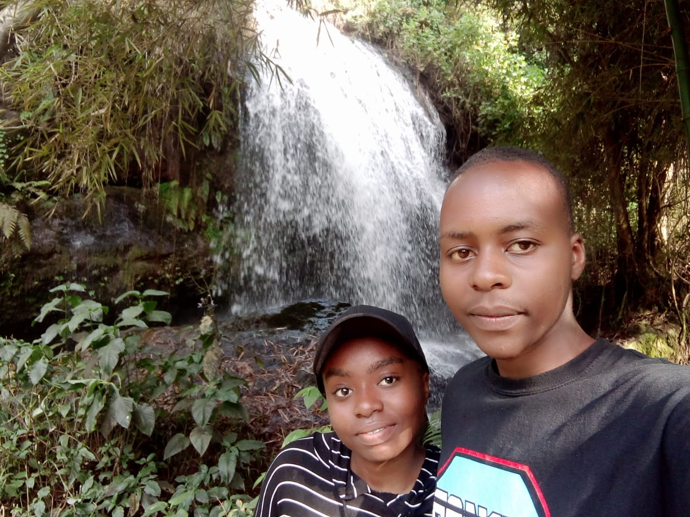
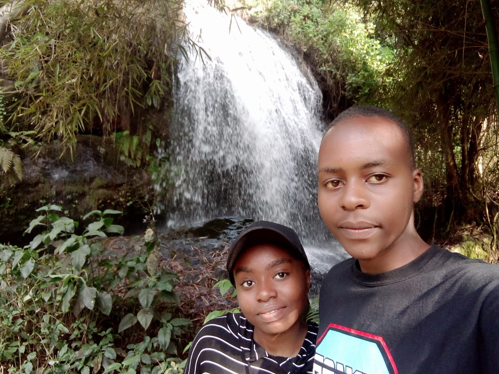
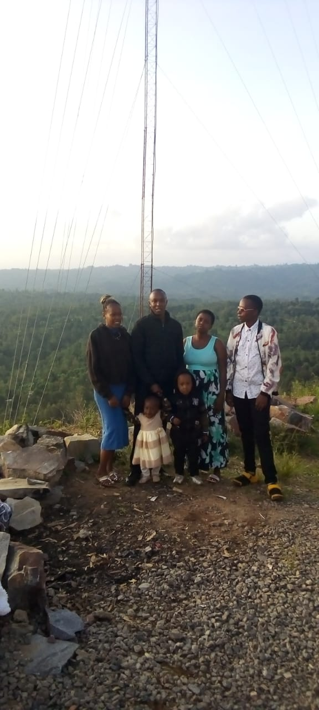
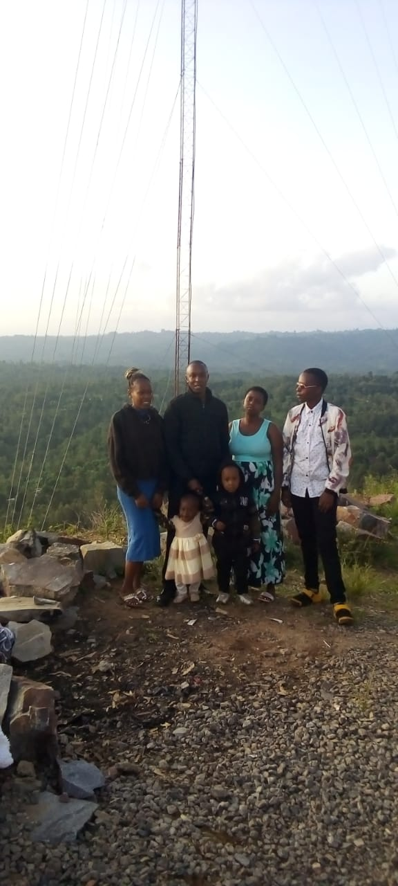
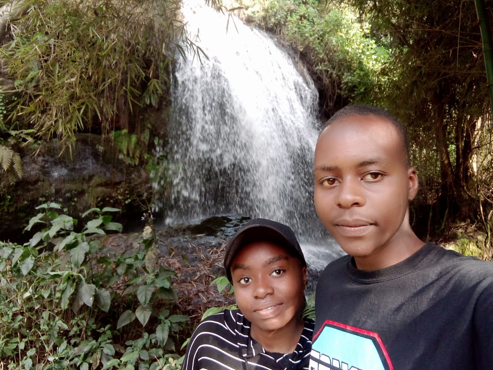
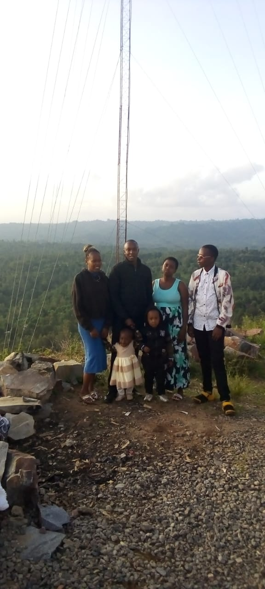

Gallery
Moments that shaped me — beyond code, beyond screens.

 

 


Loading your experience…
A story of curiosity, creativity, and becoming.
Scroll ↓I’m someone who grew up fascinated by screens — not just what appeared on them, but how they made me feel. From late-night anime marathons to quietly wondering “how is this even made?”, curiosity slowly turned into creation.
Anime taught me storytelling, emotion, and atmosphere. Web development gave me the power to build worlds of my own. Today, I blend both — crafting digital experiences that feel alive, interactive, and meaningful.
Make a future brighter than a star.
“Some dreams don’t shout. They whisper — patiently — waiting for the moment you decide to listen.”
Moments that shaped me — beyond code, beyond screens.

